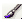

МІСТО В ХМАРАХ
Для завантаження первинників натисніть тут
Крок 1
Створюємо новий документ роздільною здатністю 1200х700px з білим фоном. Створюємо новий шар вище фонового і називаємо його "фонова текстура". Завантажуємо Dirty Brushsets в Фотошоп і, використовуючи різні кисті з цього набору, проводимо ними по новому шару. Переконайтеся, що колір кисті чорний, а flow (натиск) і opacity (непрозорість) встановлені на 30-40%.
Знову створюємо новий шар і називаємо його "хмари 1" і кистями Cloud Brushsets малюємо хмари (налаштування кисті використовуємо тіж):
Крок 2
Завантажуємо зображення Cloud Texture 1 в Фотошоп. Використовуючи комбінації клавіш CTRL+C і CTRL+V, вставляємо текстуру на наш документ. У результаті створюється новий шар, який називаємо "текстура хмар 1":
Додаємо до цієї текстури шар-маску :
І отримуємо:
Дублюємо шар двічі:
Міняємо Blending Mode (Режим накладення) шару "текстура хмар 1 копія 2" на Soft Light (М'яке світло):
Додаємо коригувальний шар Layer - New Adjustment Layer - Curves (Шар - Новий коригувальний шар - Криві), розташуйте його вище всіх попередніх шарів:
Застосувавши налаштування, отримуємо ось такий ефект:
Крок 3
Тепер завантажуємо картинку з містом (City) і вставляємо її на наш документ. Обзивають новий шар "місто" і розташовуємо так, як на малюнку нижче:
Додаємо шар-маску і стираємо зайве, використовуючи м'яку круглу кисть  і кисть з набору Cloud, яку ми використовували при малюванні хмар:
Ось, що отримуємо в результаті:
Я вирішив додати коригувальний шар Hue & Saturation (Колірний тон і Насиченість). Переходимо Layer - New Adjustment layer - Hue / Saturation (Шар - Новий коригувальний шар - Тон / Насиченість) (переконайтеся, що опція use previous layer to create clipping mask / використовувати попередній шар для створення відсічної маски активна):
Отримуємо такий результат:
Крок 4
Дублюємо шар "місто" (CTRL + J) і розміщуємо його вище всіх попередніх шарів. Міняємо Blending mode (Режим накладення) на Screen (Освітлення):

Далі я додав новий коригувальний шар Black & White (Чорно-білий) Layer - New Adjustment Layer - Black & Whtie (Шар - Новий коригувальний шар - Чорно-білий) з такими налаштуваннями:
Міняємо Blending mode (Режим накладення) коригуючого шару на Multiply (Множення):
Крок 5
Дублюємо шар "місто" три рази і для кожної копії виставляємо наступні режими накладення (Soft Light - М'яке світло, Screen - Освітлення):
На шарі "місто копія 2" застосовуємо фільтр Filter - Artistic - Watercolor (Фільтр - Імітація художніх ефектів - Акварель) з наступними налаштуваннями:
До шару "місто копія 4" додаємо шар-маску. М'якою круглою кистю і пензлем з набору Stroke стираємо зайве:
Ми бачимо, що права частина міста стала яскравіше, це надає зображенню більше глибини:
Крок 6
Додамо більше хмаринок. Для цього дублюємо шар "текстура хмар" двічі і обидва дубліката розташовуємо над усіма попередніми шарами. Міняємо режим накладення обох на Overlay (Перекриття):
Щоб додати більше динамічності, знову скористаємося кистями Stroke. На новому шарі пензлем світло-сірого кольору малюємо щось на зразок сонячних променів. Міняємо режим накладення на Overlay (Перекриття) і отримуємо:
Крок 7
На фінальному кроці я додав квіткових кистей і ще один коригувальний шар Color Balance (Колірний баланс) з такими параметрами:
До коригуючого шару додаємо шар-маску:
І ось фінальний результат наших праць:
Ще варіант:
1234567890